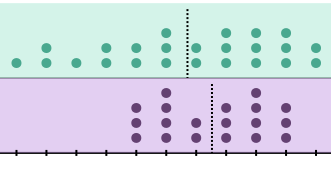

Opis kursu
O mnie
Kontakt
Dyżur dla studentów (2020/2021)
Uwagi
UWAGA dotycząca kalkulatorów (1)
UWAGA dotycząca kalkulatorów (2)
UWAGA dotycząca zapisu ułamków dziesiętnych
1
Wykład 1: Wprowadzenie
1.1
Co to jest statystyka?
1.2
Motywacja - dwa powody, dla których warto uczyć się statystyki i metod analizy danych?
1.3
Przypomnienie niektórych pojęć z matematyki
1.3.1
Przegląd elementów algebry
1.3.2
Funkcje
1.3.3
Elementy teorii zbiorów
1.3.4
Trzy podstawowe pojęcia rachunku różniczkowego
1.3.5
Granica funkcji
1.3.6
Pochodna funkcji
1.3.7
Całka funkcji
1.3.8
Całka jako pole - intuicyjne wyjaśnienie
1.3.9
Prawdopodobieństwo
2
Wykład 2. Research design - wstęp do badań empirycznych
2.1
Podstawowe typy metod badawczych w naukach społecznych
2.2
Myślenie krytyczne
2.2.1
Myślenie krytyczne:
2.3
Pytanie badawcze i hipoteza (1)
2.4
Pytanie badawcze i hipoteza (2)
2.5
Definicje operacyjne
2.6
Podstawowe metody zbierania danych w naukach społecznych
2.7
Dobór jednostek eksperymentalnych
2.8
Związki przyczynowo-skutkowe i korelacyjne
2.9
Zmienne zakłócające (‘confounding/lurking’ variables)
2.10
Przykładowe badania
2.11
Przykłady - badanie 1
2.12
Przykłady - badanie 2
2.13
Przykłady - badanie 3
2.14
Przykłady - badanie 3 (cd.)
2.15
Przykłady - badanie 3 (cd.)
2.16
Eksperyment
2.17
Klasyczny plan eksperymentalny
2.18
Badania
quasi
-eksperymentalne (
eksperymenty naturalne
)
2.19
Przykłady - badanie 4
3
Wykład 3: Statystyka - wprowadzenie
3.1
Zmienne i stałe
3.2
Wybór obiektów/jednostek do badania
3.3
Badania na próbie
3.3.1
Próba losowa prosta (próba reprezentatywna)
3.3.2
Operat losowania
3.3.3
Podstawowe typy ‘próbkowania’ (random sampling)
3.4
Obciążenie badania (
bias
)
3.5
Pomiar - definicja
3.6
Trafność i rzetelność pomiarów
3.7
Trafność i rzetelność
3.8
Poziomy pomiaru
3.9
Poziom pomiaru (2)
3.10
Poziom pomiaru (3)
3.11
Poziomy pomiaru (4)
3.12
Zmienne dyskretne i ciągłe
3.13
Tabelaryczna prezentacja rozkładów danych
3.14
Szereg prosty
3.15
Szereg rozdzielczy
punktowy
3.16
Szereg rozdzielczy
z przedziałami klasowymi
3.17
Szereg rozdzielczy
3.18
Wizualizacja rozkładów danych
3.19
Wykres słupkowy
3.20
Wykres słupkowy (2)
3.21
Wykres słupkowy (3)
3.22
Wykres słupkowy (4)
3.23
Wykres kropkowy (1)
3.24
Wykres kropkowy (2)
3.25
Szereg rozdzielczy i histogram
3.26
Histogram (1)
3.27
Histogram gęstości
3.28
Konstrukcja histogramu gęstości (1)
3.29
Konstrukcja histogramu gęstości (2)
3.30
Histogram częstości bezwzględnych
3.31
Histogram częstości względnych
3.32
Histogram dla funkcji prawdopodobieństwa - rozkład dwumianowy (1)
3.33
Histogram dla funkcji prawdopodobieństwa - rozkład dwumianowy (2)
3.34
Wykres pudełkowy
3.35
Wykres pudełkowy - przykład (1)
3.36
Wykres pudełkowy - przykład (2)
3.37
Wykres pudełkowy - przykład (3)
3.38
Wykres pudełkowy - przykład (4)
3.39
Histogram a wykres pudełkowy - przykład (5)
3.40
Wykres pudełkowy - jeszcze jeden przykład
3.41
Wykres pudełkowy (2)
3.42
Wykres pudełkowy (3)
3.43
Wykres pudełkowy (4)
3.44
Wykres pudełkowy a histogram (1)
3.45
Wykres pudełkowy a histogram (2)
STAT 101
3.24
Wykres kropkowy (2)
